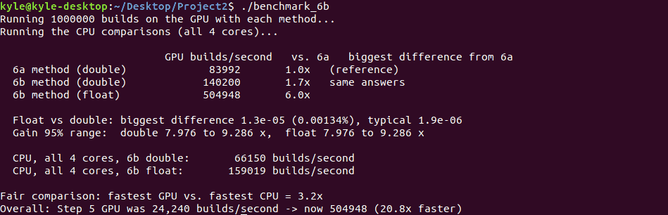
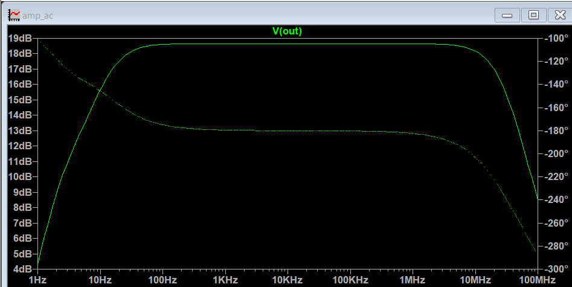
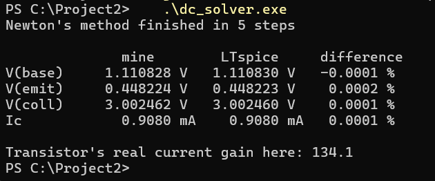
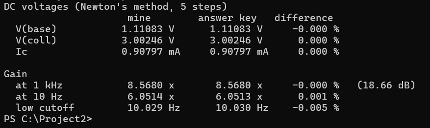
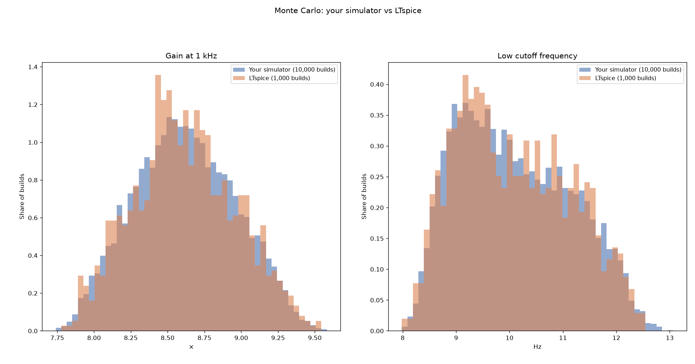
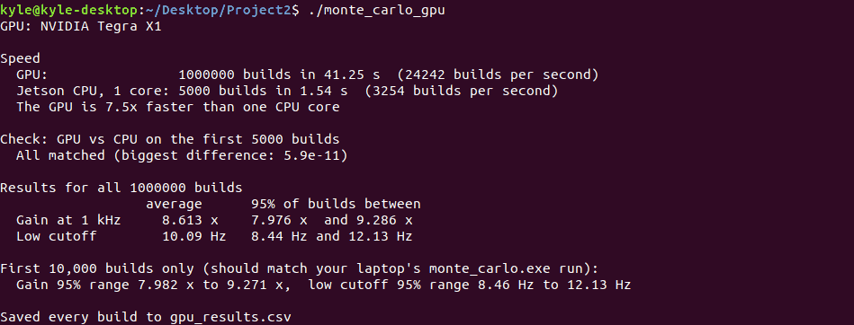
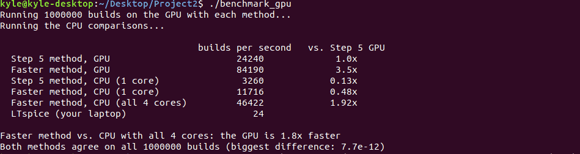

GPU Monte Carlo Circuit Simulator
A SPICE-style circuit simulator in C++ and CUDA that predicts how real-world part tolerances change a BJT amplifier's gain, running 1,000,000 random builds in 2 seconds on a Jetson Nano while matching LTspice.

Overview
Real electronic parts are never exactly their labeled value, so no two builds of a circuit behave quite the same. I wrote my own circuit simulator for a one-transistor amplifier, checked it against LTspice, and moved it onto a GPU, where thousands of threads each simulate a different random build. After optimizing it, a Jetson Nano predicts the amplifier's spread of gains across 1,000,000 builds in about 2 seconds, a job that would take LTspice nearly 12 hours at the speed I measured.
Objective & Problem Statement
Problem
A "1 kΩ" resistor might really be 950 or 1,050 Ω, and two transistors with the same part number can differ in current gain by 3×. To see how a design holds up, engineers run Monte Carlo analysis: they simulate the circuit many times, each time with every part's value randomly rolled within its tolerance. Circuit simulators run these builds one after another, so large studies are slow. LTspice managed 24 builds per second on my laptop.
Objective
Build a simulator for a BJT amplifier that matches LTspice's accuracy, then run its Monte Carlo analysis on a GPU (one random build per thread), aiming for a million builds in a few seconds on a small Jetson Nano board.
Requirements & Constraints
- Match LTspice on the nominal circuit (DC voltages, gain, and low cutoff frequency) to within 0.01%.
- Match LTspice's Monte Carlo results (averages and 95% ranges) to within 1%.
- Give every build reproducible random parts, so the CPU and GPU versions can be compared build by build.
- Run 1,000,000 builds in seconds on the Jetson Nano, whose GPU runs 64-bit math at only 1/32 the speed of its 32-bit math.
- Benchmark fairly: compare the GPU against all four CPU cores, not just one.
Background
The circuit is a common-emitter amplifier built around one 2N3904 transistor. On paper it makes signals 8.57× bigger (18.7 dB) from about 10 Hz to 29 MHz, with the transistor drawing 0.91 mA. Each simulated build rolls every part's value within these tolerances:
| Part | Nominal value | Tolerance in each random build |
|---|---|---|
| R1, R2 (bias resistors) | 33 kΩ, 10 kΩ | ±5% |
| RC (collector resistor) | 2.2 kΩ | ±5% |
| RE1, RE2 (emitter resistors) | 220 Ω, 270 Ω | ±5% |
| C1, C2 (coupling capacitors) | 10 µF | ±20% (electrolytic) |
| CE (emitter bypass capacitor) | 100 µF | ±20% (electrolytic) |
| Q1 (2N3904 transistor) | Current gain ≈ 134 in this circuit | Anywhere from 100 to 300 (the datasheet range) |
Design & Architecture
Each build goes through the same five steps, and each GPU thread runs all five for its own build. The same C++ code compiles for both the CPU and the GPU, so every GPU answer can be checked against the CPU's answer for the identical circuit.
Key design decisions
| Decision | Options considered | Choice & reasoning |
|---|---|---|
| Random part values | A random-number library, or values computed from each build's number | Computed from the build number with a hash function. Build #5 always gets the same parts on the CPU and the GPU, so results can be compared build by build. |
| Solver | A general-purpose SPICE engine, or one written for this circuit | Written for this circuit: Kirchhoff's current law at each node, the standard SPICE (Gummel-Poon) transistor model, and Newton's method, with voltage steps limited to 0.1 V so it always converges. |
| Finding the low cutoff | Halve the search range repeatedly, or estimate the crossing point | The Illinois method, which estimates where the gain crosses the target. It needs about 12 gain calculations instead of 40. |
| Equations per frequency | 7 unknowns (including two nodes inside the transistor), or fold those in first | Fold the transistor's tiny internal resistors into a 3-terminal block once per build, leaving 5 unknowns per frequency. It's faster, and it removed the 1 Ω resistor that made 32-bit math lose accuracy. |
| Number format on the GPU | 64-bit (double) or 32-bit (float) | 32-bit, since the Nano's GPU runs it 32× faster. The largest difference from 64-bit results was 0.0013%, thousands of times smaller than the spread being predicted. |
| Benchmarking | GPU vs. one CPU core, or vs. all four | All four cores, each running its own fastest version. Comparing against one core would have overstated the speedup about 4×. |
Implementation
- Answer key. Simulated the nominal amplifier in LTspice to get the correct bias voltages, gain, and frequency response.
- DC solver (C++). Wrote the circuit's six current-balance equations and solved them with Newton's method. It converges in 5 steps and matches LTspice to within 0.0002%.
- AC gain (C++). Linearized the transistor at its bias point and solved the circuit at any frequency with complex nodal analysis. It matches LTspice's gain and low cutoff to within 0.005%.
- Monte Carlo on the CPU. Ran 10,000 random builds and compared their spread with LTspice running 1,000 of its own.
- Port to CUDA. The same functions compile for both CPU and GPU. Every GPU thread simulates one build, and the CPU re-checks the first 5,000.
- Optimization. Removed repeated work per frequency, switched to the faster cutoff search, folded in the transistor block, and moved to 32-bit math, re-checking every build at each stage.



The GPU part itself is short. Each thread works out which build it owns and simulates it:
__global__ void simulate_builds(long long first, int count, double *gain, double *f_low) {
int i = blockIdx.x * blockDim.x + threadIdx.x; // this thread's build
if (i < count)
simulate_one(first + i, gain[i], f_low[i]); // same function the CPU runs
}Testing & Validation
- Nominal circuit vs. LTspice: DC voltages within 0.0002%, gain within 0.001%, low cutoff within 0.005%.
- Monte Carlo vs. LTspice: average gain within 0.03% and average low cutoff within 0.14%. The 95% gain ranges were 7.98–9.27× (mine) and 7.97–9.29× (LTspice).
- GPU vs. CPU, build by build: the first 5,000 GPU builds matched the CPU to within 6×10-11, and the first 10,000 reproduced the laptop's results exactly.
- Every optimization re-checked: each faster version was compared with the previous one on all 1,000,000 builds before moving on.


Results
The optimized simulator met every target. It matches LTspice and runs a million builds in about 2 seconds. The table tracks the speed of each version, measured on 1,000,000 builds.
| Version | Runs on | Builds per second | 1,000,000 builds take |
|---|---|---|---|
| LTspice's Monte Carlo | Laptop CPU | 24 | ≈ 11.6 hours (calculated) |
| First GPU version (64-bit) | Jetson GPU | 24,242 | 41.3 s |
| Less repeated work + faster cutoff search | Jetson GPU | 83,992 | 11.9 s |
| + transistor block (64-bit) | Jetson GPU | 140,200 | 7.1 s |
| + 32-bit math | Jetson GPU | 504,948 | 2.0 s |
| Fastest CPU version (all 4 cores) | Jetson CPU | 159,019 | 6.3 s |

LTspice is general-purpose and computes 401 frequency points per build versus about 14 here, so the comparison with it isn't like-for-like. The fair number is 3.2×: the GPU against all four CPU cores, both running the same optimized code.
Challenges & Lessons Learned
- 32-bit math lost accuracy at first. My first float version was off by up to 0.05%. I traced it to the transistor model's 1 Ω internal resistor, which made the equations lose digits in 32-bit math. Folding the internal resistors into the transistor block made the float version 40× more accurate and faster.
- Know your hardware's weak spots. The Nano's GPU runs 64-bit math at 1/32 speed, so the first GPU version was only 1.8× faster than all four CPU cores even after the first round of optimizations. The biggest win came from using the format this GPU is fast at, once I'd checked the accuracy cost.
- Benchmark against the strongest baseline. Against a single CPU core, the GPU looked about 4× better than it really was. Measuring all four cores keeps the claim honest.
- Reproducible randomness pays off. Computing each build's parts from its build number meant the CPU and GPU simulated identical circuits, so every optimization could be checked build by build. This is the same answer-key approach I used in my FPGA accelerator project.
Future Work
- Measure the energy per million builds on the GPU and the CPU, using a current-sense resistor and an Analog Discovery 3.
- Build the amplifier with real parts and check that measured gains fall inside the predicted range.
- Add the transistor's internal capacitances to predict the high-frequency cutoff (about 29 MHz).
- Profile the kernel with NVIDIA's tools and try larger circuits, where the GPU's advantage should grow.